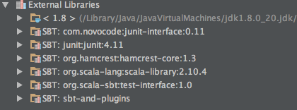
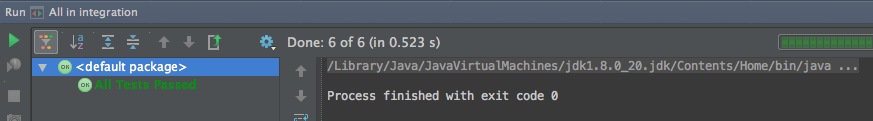
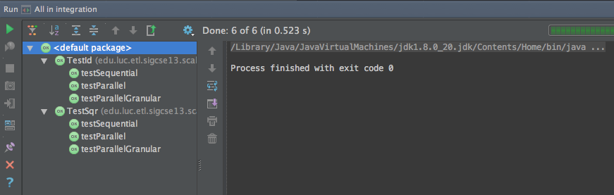
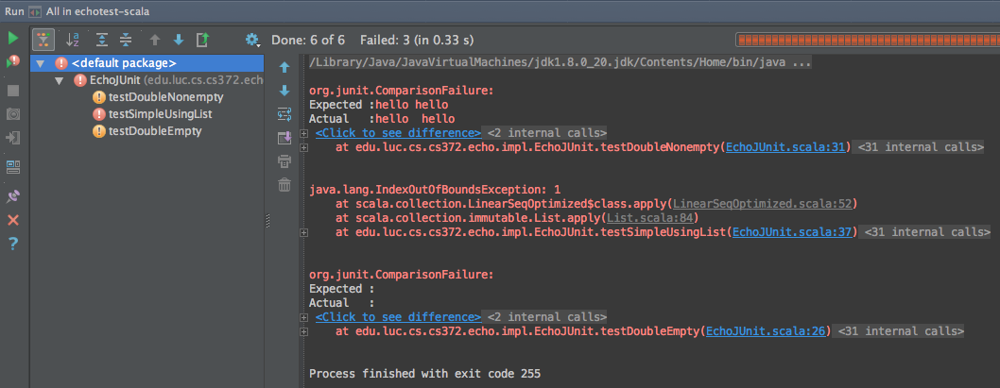

Todo
Consider evaluating and possibly discussing Typesafe Activator (sbt-based!).
Note
The main reference source for this chapter is http://www.scala-sbt.org/0.13/docs/, especially http://www.scala-sbt.org/0.13/docs/Testing.html
In this chapter, we’ll discuss your choices for setting up an effective development and testing environment for Scala. The main thing to keep in mind is that proper testing almost always involves dependencies on external libraries. Even if you are comfortable working with the Scala command-line tools and a text editor, you are responsible for setting the dreaded classpath. This can quickly become unwieldy even when only simple dependencies are involved, so this is not something you would usually want to do manually.
Therefore, you will benefit greatly from upgrading to Scala’s Simple Build Tool (sbt), and the rest of this book relies heavily on this. After switching to sbt, you can continue to use your favorite text editor. And if you prefer to use an integrated development environment (IDE), you are in luck as well: JetBrains IntelliJ IDEA and Eclipse, both very popular IDEs for Scala, integrate well with sbt.
In general, build tools support the build process in several ways:
Some well-known build tools include:
This tool introduced several innovative capabilities. It supports convention over configuration in terms of project layout in the file system and build lifecycle. In addition, it automatically manages external dependencies by downloading them from centralized repositories. It relies on XML-based configuration files.
<dependency>
<groupId>org.restlet</groupId>
<artifactId>org.restlet.ext.spring</artifactId>
<version>${restlet.version}</version>
</dependency>
These newer tools emphasize convention over configuration in support of agile development processes. sbt is compatible with ivy and designed primarily for Scala development. For example, ivy uses a structured but lighter-weight format:
<dependency org="junit" name="junit" rev="4.11"/>
We will focus on sbt in the remainder of this book, though the concepts equally apply to similar build systems and IDEs.
The main prerequisite to Scala development is having a Java runtime, version 1.6 or later, installed on your system. We recommend that you install the latest available Oracle Java 7 Development Kit. While you can work with OpenJDK and other VM implementations to run Scala, we believe that that the best experience and performance comes from the latest stable release of the Java 7 Platform.
Equally important is having an installation of sbt itself on your system. The exact way of doing so depends on your platform.
On the Mac, the recommended way is to use Homebrew
$ brew install sbt
or MacPorts:
$ sudo port install sbt
On Linux, the recommended way is to use the installer for your platform available in the sbt setup instructions. For Linux:
$ wget https://dl.bintray.com/sbt/native-packages/sbt/0.13.7/sbt-0.13.7.tgz
$ sudo tar xzf sbt-0.13.7.tgz -C /opt
On Windows, there is an MSI (Microsoft Installer) file. Download and install as you normally would any installer on Windows.
On Windows and Linux, the recommended way is to use the installer for your platform available in the sbt setup instructions.
In the simplest cases, sbt does not require any configuration and will use reasonable defaults. The project layout is the same as the one Maven uses:
src/main/scala.src/test/scala.In practice, however, we will want to include some automated testing in the build process, and this typically requires at least one build dependency, as we will see shortly.
sbt supports two configuration styles, one based on a simple Scala-based domain-specific language, and one based on the full Scala language for configuring all aspects of a project.
A minimal sbt build.sbt file looks like this. The empty lines are
required, and the file must be placed in the top-level root folder of
your project.
name := "integration-scala"
version := "0.2"
Additional dependencies can be specified either one at a time
libraryDependencies += "org.scalatest" %% "scalatest" % "2.2.2" % Test
or as a group
libraryDependencies ++= Seq(
"org.scalatest" %% "scalatest" % "2.2.2" % Test,
"org.mod4j.org.apache.commons" % "logging" % "1.0.4"
)
The dependency format follows the same structure as the Maven example above:
In particular, the Test configuration indicates that this
dependency is required to compile and run the tests for this project
but to compile or run the main project code itself.
Furthermore, some dependencies are “cross-built” against different
versions of Scala. For example, the ScalaTest library comes in the
form of two artifacts, scalatest_2.10 and scalatest_2.11, for
use with the corresponding versions of Scala. When we use %%
between organization ID and artifact ID, sbt automatically appends an
underscore and the Scala version to the artifact ID.
For example, if our Scala version is 2.10, then
"org.scalatest" %% "scalatest" % "2.2.2" % Test
is equivalent to
"org.scalatest" % "scalatest_2.10" % "2.2.2" % Test
This allows us to rely on the default Scala version or indicate our choice in a single place, e.g.:
scalaVersion := "2.11.4"
Though you are generally encouraged to use the build.sbt format,
some complex projects may require build files that use the full Scala
syntax. The main build file should be named Build.scala. It and
other Scala-based build files must be placed in the project
subfolder of your project root. Further details are available in the
.scala build definition section of
the sbt reference manual.
The new multi-project .sbt build definition format combines the strengths of the other two flavors and is recommended for complex projects instead of the .scala flavor.
The default place where Maven and its descendents, including sbt, find
their dependencies is Maven’s Central Repository, which you can
search via http://search.maven.org. This search interface will allow
you to drill down into the desired artifact and ultimately show you
exactly what to add to the libraryDependencies in your build file.
For example, searching for scalatest results in a long list, of
which we show only the top.
Once we drill into the specific artifact scalatest_2.10, we see
the available versions of this artifact. (The non-cross-built artifact
scalatest without the added Scala version corresponds to much
older versions of this framework.)
Now we can choose the desired version of this artifact. For learning
and production development, it is usually best to choose the latest
released version, in this case, 2.2.2. Once we select this
version, we can go to the “dependency information” section of the
page, select the “Scala SBT” tab, and will see the exact dependency
definition we can copy and paste into our build file.
To use any dependencies not in the central repo, you need to add custom resolvers (preferred) or perform a local install (discouraged).
Concretely, sbt provides a common test interface that these main Scala testing frameworks support directly:
What this means is that no additional support for the test interface
is needed, and you can simply add the desired testing framework(s) as
managed dependencies (libraryDependencies) in sbt.
If you want to use JUnit or TestNG, however, you will also need to pull in a separate adapter for either of these to work with sbt’s common interface. For JUnit, this is a simple additional dependency in the build file:
"com.novocode" % "junit-interface" % "0.10" % Test
For TestNG, there is an sbt plugin that requires a couple of extra steps to add to your project.
In this book, we will start you out with plain JUnit because we assume that most readers are familiar with it. Then we will focus on ScalaTest, which also supports some techniques from ScalaCheck. In the advanced chapter, we will also take advantage of specs2.
Before we discuss how to use sbt in more detail, recap our example from chapter Testing Fundamentals. Our subject under test (SUT) is a Scala class that represents rational numbers. The complete code is available at https://github.com/LoyolaChicagoCode/scala-tdd-fundamentals.
The example also includes JRational, a similar class implemented in Java, as a second SUT and various test suites for each of these implementations:
In this section, we’ll continue our sbt explorations with a bit more explanation. As we indicated in chapter 1-Testing Fundamentals, we used sbt with the idea of tying up loose ends in this chapter. This approach works ideally for tools like sbt, which emphasizes convention over configuration, so you can just use sbt without knowing all of the (sometimes gory) details. So please make sure you have checked out the scala-tdd-fundamentals repository.
In ScalaTest, a test is an atomic unit of testing that is either executed during a particular test run or it is not; a test is usually a method or other program element that stands for a method. A test suite is a collection of zero or more tests. (In JUnit, a test class corresponding to a test suite in ScalaTest, and a test suite is a collection of test classes.) The sbt testing tasks correspond to this test organization hierarchy. In general, to run one or more sbt tasks task1, task2, ... taskN, we either specify them on the sbt command line in the desired order separated by spaces
$ sbt task1 task2 ... taskN
or we launch sbt’s interactive mode and then enter the tasks one by one
$ sbt
...some output...
> task1
...some more output...
> task2
...etc...
The following are the most important sbt tasks for testing: The test task This task runs all tests in all available test suites. In our example, it would simply run the six tests (two times three).
$ sbt test
[info] Loading global plugins from /Users/laufer/.sbt/0.13/plugins
[info] Loading project definition from /Users/laufer/Cloud/Dropbox/laufer/Work/scala-tdd-examples/scala-tdd-fundamentals/project
[info] Set current project to SimpleTesting (in build file:/Users/laufer/Cloud/Dropbox/laufer/Work/scala-tdd-examples/scala-tdd-fundamentals/)
[info] RationalScalaTestFlatSpecFixtures:
[info] GCD involving 0
[info] - should give y for gcd(0, y)
[info] - should give x for gcd(x, 0)
[info] GCD not involving 0
[info] - should be 3
[info] - should be 5
...more output...
[info] RationalScalaTestFlatSpecMatchers:
[info] GCD involving 0
[info] - should give y for gcd(0, y)
[info] - should give x for gcd(x, 0)
[info] GCD not involving 0
[info] - should be 3
[info] - should be 5
...lots more output...
[info] ScalaTest
[info] Run completed in 657 milliseconds.
[info] Total number of tests run: 62
[info] Suites: completed 3, aborted 0
[info] Tests: succeeded 62, failed 0, canceled 0, ignored 0, pending 0
[info] All tests passed.
[info] Passed: Total 73, Failed 0, Errors 0, Passed 73
[success] Total time: 2 s, completed Mar 6, 2015 4:46:56 PM
with the most important information on the third-last line: all tests have passed.
For each ScalaTest-based test suite, we see a heading for that suite and output indicating the result of each test, even when the test has passed. The fourth through sixth lines from the bottom indicate how many ScalaTest suites and tests ran and what results they produced.
For each JUnit-based suite, we only see output if there is a failure or an error. Because all of them passed, the only indication that they ran is the higher total number of tests on the second-last line.
The testOnly task
During development, to save time, we may want to run only a subset of the available tests. The testOnly task allows us to specify zero or more test classes to run. For example, we can run only the test with the square function:
$ sbt 'testOnly RationalScalaTestFlatSpecMatchers'
...some output...
[info] Run completed in 445 milliseconds.
[info] Total number of tests run: 22
[info] Suites: completed 1, aborted 0
[info] Tests: succeeded 22, failed 0, canceled 0, ignored 0, pending 0
[info] All tests passed.
[info] Passed: Total 22, Failed 0, Errors 0, Passed 22
This task also supports wildcards, so
$ sbt 'testOnly *Fix*'
will run only RationalScalaTestFlatSpecFixtures, while
$ sbt 'testOnly *Java*'
will run both JavaRationalJUnitTests and JavaRationalScalaTestFlatSpecMatchers.
The testQuick task
This task is similar to testOnly in giving you the option to select the matching tests to run. In addition, it runs only those tests that meet at least one of the following conditions: the test failed in the previous run the test has not been run before the tests has one or more transitive dependencies that have been recompiled The test:console task This task allows you to enter an interactive Scala REPL (read-eval-print loop), just like sbt console, but with the test code and its library dependencies for the Test configuration (along with any transitive dependencies) conveniently on the class path. This is useful when you want to explore any code in src/test/scala or the library dependencies for the Test configuration interactively. The test: prefix This prefix is optional for the other tasks we discussed above because their names are unambiguous. There are various other tasks, however, that also apply to the main sources. In those cases, the test: prefix will allow you to disambiguate. For example,
$ sbt test:compile
will compile the test sources along with the main sources, while
$ sbt compile
will compile only the main sources. Similarly, if you have a main program in your test sources, you can run it with
$ sbt test:run
or
$ sbt test:runMain
sbt includes a rich and growing plugin community-based ecosystem. Plugins extend the capabilities of sbt, and you can install them per project or globally. More details are available in the sbt reference.
In addition to the sbt-testng-interface mentioned above, here are some useful examples relevant to testing:
Many developers and students prefer an Integrated Development Environment (IDE) because of code completion and easier code comprehension for complex projects.
Our preferred IDE is IntelliJ IDEA, which has had a lot of traction in the open-source and agile development communities for a long time. You can get the current version of IntelliJ IDEA Community edition for free from the following URL and then install the Scala plugin through the plugin manager.
When you install the Scala plugin through the plugin manager, you will automatically get the version that matches that of IDEA. This plugin has become quite mature and usable as of December 2014. In particular, compilation (and execution of Scala worksheets) has become much faster.
The IntelliJ IDEA Scala plugin also integrates directly with sbt: Instead of importing an sbt-based project, you simply open it. When you make any changes to the sbt build file(s), IDEA reloads your project and updates the classpath and other IDEA-specific settings accordingly.
IntelliJ IDEA gives you several options for running tests:
src/test/scala and select “Run All Tests”.After you run the tests and they all passed, you will usually see a condensed view with the passed tests hidden.
This is because the leftmost button, “hide passed”, is enabled by default. You can turn this option off and drill into the tests.
Also, failed tests automatically show up in expanded fashion.
On these images, we recognize the three possible outcomes of a test from the fundamentals chapter [REF]:
IntelliJ IDEA has a built-in native terminal for your OS. This allows you to use, say, hg or sbt conveniently without leaving IDEA.
View > Tool Windows > Terminal
To practice Scala in a light-weight, exploratory way, you can use Scala worksheets in IntelliJ IDEA. These will give you an interactive, console-like environment, but your work is saved and can be put under version control.
File > New > Scala Worksheet
You can even make your worksheets test-driven by sprinkling assertions throughout them.
The official Scala IDE is provided as an Eclipse bundle that has Scala already installed, based on the current Luna release. It will work on all platforms with very minor differences and provides similar functionality to IntelliJ IDEA. The following link will take you there.
http://scala-ide.org/download/sdk.html
If you are already using Eclipse, you can add the Scala IDE as a plugin to your existing installation. The steps for this are described here.
Perhaps the key difference between IntelliJ IDEA and Eclipse from a Scala developer’s point of view is the support for sbt. While IntelliJ IDEA can directly open sbt-based projects in most cases, Eclipse requires you to to first generate an Eclipse project from sbt on the command line and then import this into Eclipse as an existing project. Importing an sbt project into Eclipse To enable sbt to generate an Eclipse project definition, we add the sbteclipse plugin to your project by placing the following line into our project/plugins.sbt file (or installing it globally in $HOME/.sbt/0.13/plugins/build.sbt, where $HOME stands for your home directory.)
addSbtPlugin(“com.typesafe.sbteclipse” % “sbteclipse-plugin” % “3.0.0”)
This defines the sbt task eclipse, which we can use as follows:
$ sbt eclipse [info] Loading global plugins from /Users/laufer/.sbt/0.13/plugins [info] Updating {file:/Users/laufer/.sbt/0.13/plugins/}global-plugins... ... [info] Loading project definition from /Users/laufer/Cloud/Dropbox/laufer/Work/scala-tdd-examples/scala-tdd-fundamentals/project [info] Updating {file:/Users/laufer/Cloud/Dropbox/laufer/Work/scala-tdd-examples/scala-tdd-fundamentals/project/}scala-tdd-fundamentals-build... ... [info] Set current project to SimpleTesting (in build file:/Users/laufer/Cloud/Dropbox/laufer/Work/scala-tdd-examples/scala-tdd-fundamentals/) [info] About to create Eclipse project files for your project(s). ... [info] Done updating. [info] Successfully created Eclipse project files for project(s): [info] SimpleTesting
We are now ready to import the project into Eclipse in three steps. We first choose File > Import from the top-level menu and tell Eclipse that we want to import an existing project. We then navigate to the root folder of our project. Finally, we confirm the import, making sure our desired existing project shows up in the list and has been checked off.
You should now see your project tree in the Eclipse Package Explorer view to the left. In particular, the Referenced Libraries section will include the library dependencies from your build.sbt along with their direct and indirect dependencies (transitive closure).
TIP: To make sure you always have a working command-line configuration of your project, you should consider sbt’s build.sbt the “single source of truth” and make any configuration changes there. Then, every time you do make a change, re-run sbt eclipse and then refresh your project within Eclipse to pick up the changes. For example, if you added scalacheck as a library dependency, it should now show up in Eclipse’s Package Explorer view under Referenced Libraries.
Testing in Eclipse We can now run all JUnit-based test suites through the top-level menu
Run > Run As… > Scala JUnit Test
or the desired sub-hierarchy of our test through context menu (obtained by right-clicking on the desired node in the Package Explorer)
Run As… > Scala JUnit Test
The test(s) then run in the graphical Eclipse JUnit test runner.
To run ScalaTest-based test suites, we have to run them individually through the context menu
Run As… > ScalaTest - File
The selected test suite will then run in the graphical Eclipse ScalaTest runner. Initially, Eclipse will show you the ScalaTest console.
Once you switch to the ScalaTest tab, you will see the graphical ScalaTest runner displaying a hierarchical view of your test suite.
TIP: Eclipse is pickier than sbt or IntelliJ IDEA about requiring the source folder hierarchy under test to match the logical package structure. If they don’t match, then Eclipse will not discover the JUnit tests therein.
IDE Choice: Typesafe Activator Typesafe Activator is a lightweight IDE implemented as a browser-based front end to a local installation of sbt provided by Typesafe, the company behind Scala and related technologies. You can obtain Activator from here:
https://typesafe.com/get-started
For our needs, the “mini package” with no bundled dependencies is actually sufficient.
When you launch Activator from your file explorer or command line, the Activator home screen will show up in your default browser. From there, you can navigate to an existing sbt-based project using the navigation view on the right.
TIP: Your sbt-based project must contain a project/build.properties file containing at least the single line
sbt.version=0.13.7
Otherwise Activator will not recognize your project as valid.
You can now use the menu in the far left column to edit, run, and test your code. There is a file navigation menu on the near left and a syntax-directed editor as the main content of the window.
Once you run the tests, you will see a flat list of results. Failures and/or errors will show up as a problem count in the far left column and within the flat list. So far, there is no navigation from the flat list directly to the source editor.
Todo
Konstantin needs to help me get all of the figures into the remaining sections.
Codio is an entirely cloud-based hosted environment and enables you to develop without installing any software locally. The free starter tier provides modest but sufficient computational resources and unlimited public and/or private repositories. You can access Codio here:
From your personal Codio home screen, you can start creating a project. The first thing you will need to do is choose a suitable solution stack for Scala development:
Then you can create a new empty project or, as we are showing here, import an existing one from any Git repository.
Using the “Filetree” view on the left, you can navigate within your source files and open them in the syntax-directed editor.
To run or test your code, you will use Tools > Terminal to open a Linux terminal where you can run sbt test or other commands.
At the time of this writing, Codio provides you with a persistent virtual Linux environment based on the Ubuntu 12.04.5 LTS (long-term support) release. This environment does not give you root access or access to the standard package manager, apt. Instead, it provides you with Codio’s own package manager called parts, which lets you add packages from a much more restricted list maintained by Codio.
Codio has emerged as our preferred and recommended way to get started with general Scala console app and web app/service development because it requires no local installation yet is fully sbt-based and integrates with Git. In addition, we have been able to create a custom Codio stack for Android development in Scala as well as Java. Summary In this chapter, we discussed how to test Scala code in various ways. We first covered command-line testing using the simple build tool (sbt) and its test-specific tasks. We then covered several popular and emerging IDE choices, including Codio, our recommended choice to get started in the cloud without any local installation.
{kind=link}
{kind=link}
{kind=link}
{kind=link}
{kind=link}
{kind=link}
{kind=link}
{kind=link}